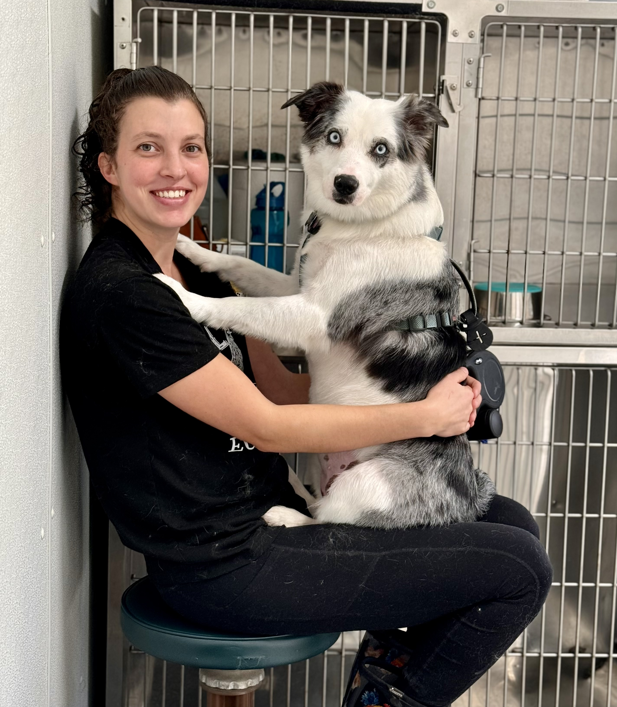

Meet The Owner!
Hi, I'm Hannah, the owner and groomer behind What The Fluff Pet Grooming. I began my grooming journey in August of 2021, gaining hands-on experience in a corporate grooming environment until April of 2024, when I took the leap and opened my own business.
Hannah - Lead Groomer, Certified Master Pet Stylist
My background in animal rescue sparked a deep passion for compassionate, patient care and inspired me to create a grooming space that prioritizes both pets and the people who love them. While dog grooming is not state-certified, I am Fear Free Certified, Pet First Aid & CPR Certified, and I am always continuing my education to stay current on best practices, safety, and low-stress handling techniques.
My goal is to provide a calm, positive grooming experience while building strong relationships within the community—one fluffy client at a time.
